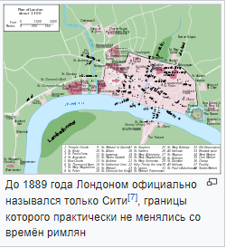
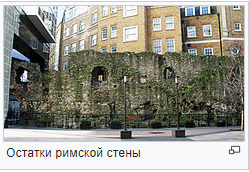

Название Лондона восходит к названию города римского времени «Лондиниум» (лат. Londinium), происхождение которого неясно. Считается, что оно является доримским, заимствованным в тех местах, где и поныне стоит Лондон. Первое, эпиграфическое, его упоминание относится ко времени около 70 года (лат. Londinio «в Лондиниум»)[8][9]. Полвека спустя название города — «Лондиниум» (лат. Londinium) встречается у Тацита, около середины II века — у Птолемея (др.-греч. Λονδίνιον «Лондинион»)[10][11]. Незадолго до ухода с острова, около 368 года, римляне переименовали город в Авгу́сту. В документах VII—IX веков поселение неподалёку от прежнего Лондиниума обозначено как Лунденвик (др.-англ. Lundenwic). На серебряных монетах первой половины VIII века присутствуют надписи de Lundonia. В конце IX столетия саксы восстановили прежний римский город, называвшийся теперь Лунденбурхом (др.-англ. Lundenburh)[12].
Лондиниум был основан римлянами после их третьего вторжения на Британские острова в 43 году н. э.[16][17]. Поселение на северном берегу Темзы при впадении в неё речушки Уолбрук должно было защищать деревянный мост, построенный через Темзу. Римляне, вероятно, продвигались с побережья моря вглубь острова по дороге, проходившей через брод в районе нынешнего Вестминстерского моста.
